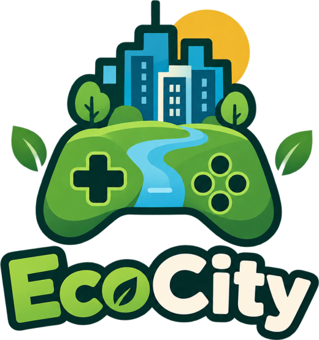

Você está sem conexão
O EcoCity precisa de conexão com o servidor para validar suas ações, quizzes e progresso da cidade em tempo real.
Assim que a internet voltar, a página recarregará automaticamente ou você pode tocar no botão abaixo.